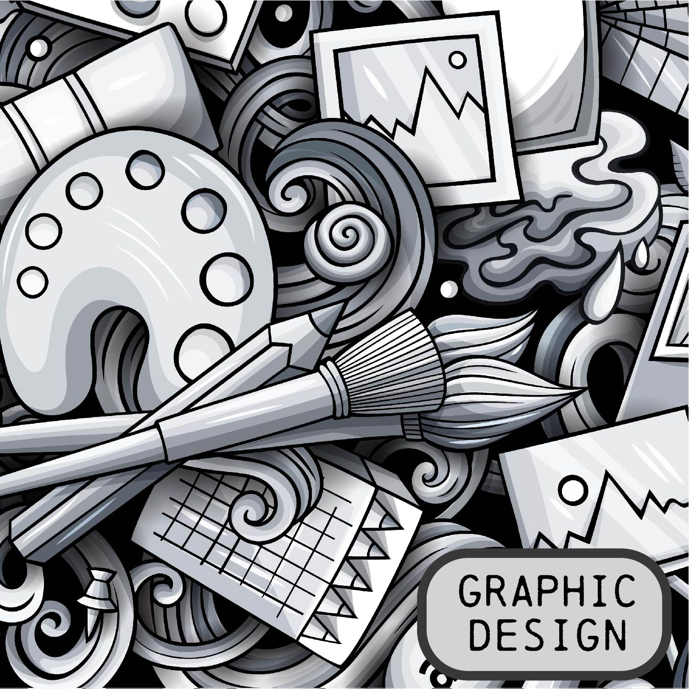
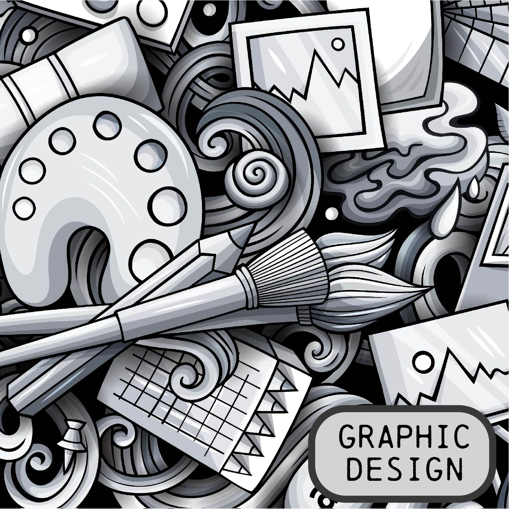

Nycole originally designed her career between art and finance. The collision of the two worlds began in college. She attended college in Seattle, WA. for a degree in Animation Arts and Design, while maintaining a full time career at the local credit union. She started as a bank teller and advanced to the operations team where she assisted major undertakings such as converting the credit union into a bank.
Upon completion of her degree, Nycole returned home to Albuquerque, NM, where she continued her career in finance working for Citi, one of the biggest credit card companies in the world. There, Nycole became one of the leading sales associates; consistently ranking among the top 25 salespeople on site, receiving national recognition.
As the turn of the 2008 financial crisis started to change the credit industry, Nycole was invited to join Fidelity Investments as they opened a new operational site opening in Albuquerque. During her tenure with Fidelity she became a subject-matter expert specializing in health and welfare operations and record keeping for other 3rd party clients. She mainly specialized in system operations and was responsible for problem-solving situations form end to end. She later assisted the system operational teams to design a new processing systems intended to streamline operations. In total, Nycole spent over 11 years working at the firm becoming a true expert in her field.
After leaving Fidelity, Nycole decided to embark on a new adventure and complete career change by joining the first cohort of the Internet of Things Deep Dive Coding Bootcamp provided by CNM Ingenuity. This challenging hands-on bootcamp is designed to teach the basics of coding and electric/mechanical engineering within a 10-week period. However, the camp was modified when the world went into lockdown due to the Covid-19 pandemic. Nycole not only took on the challenge but excelled with the changing environment. She completed the course placing among the top of her class. She spent the next couple of years gaining experience in fabrication, vinyl and woodworking. Once that experience was over she decided to go back to the Deep Dive Coding community, this time enrolling in the Full Stack Web Development bootcamp to gain new knowledge and deepen her coding skills.
No matter the direction her professional career took, Nycole never stopped producing art. On her spare time she painted portraits for her friends and family. In addition, she dabbles with graphic design, photography and web deign. She admits that she always intended to be more ambitious in the field of art and design, however, never found the right vehicle for her creativity except for personal projects. She is excited to merge her creative passions with new found technical skills to develop new Internet of Things projects and Full Stack web applications.
 
